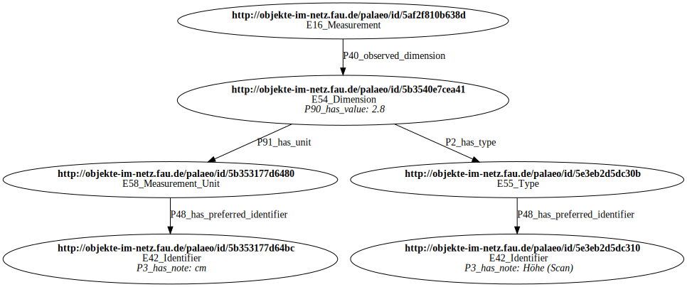

Datenmodell
Als Sammlungsübergeifendes Datenmodell wird CIDOC-CRM mit Erweiterung durch die DFI4Objects Core Ontologie (N4O) verwendet.
Das Datenmodell beschränkt sich im Moment noch auf Klassen ohne Properties!
Knoten im Property Graphen erhalten als Knoten-Label die entsprechenden CRM- bzw. N4O Klassen. Dabei werden Leerzeichen und Sonderzeichen durch Unterstrich ersetzt, also z.B.
E22_Human_Made_Objectfür E22 Human-Made Object
Zwischenzeitlich gelöschte und umbenannte Klassen können weiterhin verwendet werden, allerdings werden diese durch Expansion auf die neueste Form gemappt.
Die Klassenhierarchien als Diagramm
{kind=link}
{kind=link}
{kind=link}
Das Datenmodell besteht zunächst nur aus einer Klassenhierarchie. Diese muss noch erweitert werden um
- Properties
- Identifier (für Normdaten-Identifier siehe https://github.com/nfdi4objects/n4o-terminologies)
- Informationen über Sammlungen aus denen die Daten und Objekte stammen (siehe https://github.com/nfdi4objects/n4o-databases und https://github.com/nfdi4objects/n4o-rdf-import)
- Ontologien und Vokabulare
Beispiel
Folgender in CIDOC-CRM modellierter Teilgraph (in Turtle-Syntax):
@prefix crm: <http://erlangen-crm.org/170309/> .
<http://objekte-im-netz.fau.de/palaeo/id/5af2f810b638d>
a crm:E16_Measurement ;
crm:P40_observed_dimension <http://objekte-im-netz.fau.de/palaeo/id/5b3540e7cea41> .
<http://objekte-im-netz.fau.de/palaeo/id/5b3540e7cea41>
a crm:E54_Dimension ;
crm:P2_has_type <http://objekte-im-netz.fau.de/palaeo/id/5e3eb2d5dc30b> ;
crm:P91_has_unit <http://objekte-im-netz.fau.de/palaeo/id/5b353177d6480>
crm:P90_has_value 2.8 .
<http://objekte-im-netz.fau.de/palaeo/id/5b353177d6480>
a crm:E58_Measurement_Unit ;
crm:P48_has_preferred_identifier <http://objekte-im-netz.fau.de/palaeo/id/5b353177d64bc> .
<http://objekte-im-netz.fau.de/palaeo/id/5e3eb2d5dc30b>
a crm:E55_Type .
crm:P48_has_preferred_identifier <http://objekte-im-netz.fau.de/palaeo/id/5e3eb2d5dc310> ;
<http://objekte-im-netz.fau.de/palaeo/id/5e3eb2d5dc310>
a crm:E42_Identifier ;
crm:P3_has_note "Höhe (Scan)" .
<http://objekte-im-netz.fau.de/palaeo/id/5b353177d64bc>
a crm:E42_Identifier ;
crm:P3_has_note "cm" .
wird konvertiert in folgenden Property Graph (in PG Format und als Diagram):
http://objekte-im-netz.fau.de/palaeo/id/5af2f810b638d
:E16_Measurement
http://objekte-im-netz.fau.de/palaeo/id/5af2f810b638d
-> http://objekte-im-netz.fau.de/palaeo/id/5b3540e7cea41
:P40_observed_dimension
http://objekte-im-netz.fau.de/palaeo/id/5b3540e7cea41
:E54_Dimension
P90_has_value: 2.8
http://objekte-im-netz.fau.de/palaeo/id/5b3540e7cea41
-> http://objekte-im-netz.fau.de/palaeo/id/5e3eb2d5dc30b
:P2_has_type
http://objekte-im-netz.fau.de/palaeo/id/5b3540e7cea41
-> http://objekte-im-netz.fau.de/palaeo/id/5b353177d6480
:P91_has_unit
http://objekte-im-netz.fau.de/palaeo/id/5b353177d6480
:E58_Measurement_Unit
http://objekte-im-netz.fau.de/palaeo/id/5b353177d6480
-> http://objekte-im-netz.fau.de/palaeo/id/5b353177d64bc
:P48_has_preferred_identifier
http://objekte-im-netz.fau.de/palaeo/id/5e3eb2d5dc30b
:E55_Type
http://objekte-im-netz.fau.de/palaeo/id/5e3eb2d5dc30b
-> http://objekte-im-netz.fau.de/palaeo/id/5e3eb2d5dc310
:P48_has_preferred_identifier
http://objekte-im-netz.fau.de/palaeo/id/5e3eb2d5dc310
:E42_Identifier
P3_has_note: "Höhe (Scan)"
http://objekte-im-netz.fau.de/palaeo/id/5b353177d64bc
:E42_Identifier
P3_has_note: "cm"

CIDOC-CRM
…
Die NFDI4Objects Core Ontologie
…
Weitere unterstütze Ontologien
…
Terminologien
…